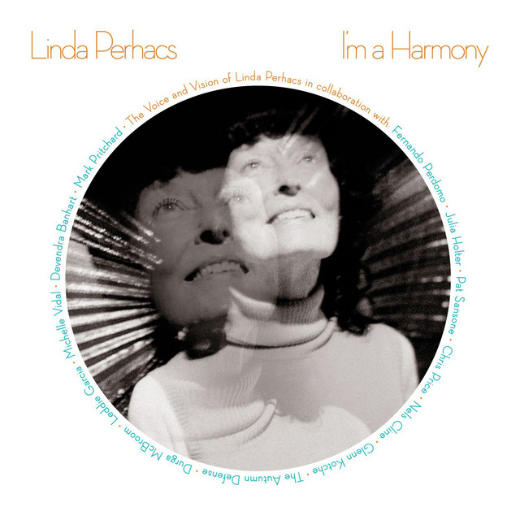

Linda Perhacs - Im a Harmony



Información del álbum facilitada por discogs.com:
Fecha de lanzamiento: 2017
Géneros: Rock, Folk, World, & Country
Estilos: Folk Rock, Acoustic, Folk, Ethereal
Pais: US
Votos: Media de 4.17 con 29 votos
Sello: Seventh Rule Recordings
Layout - Scot Seguine
Mixed By - Brett Portzer
Mixed By - Vytear
Photography By [Front] - Robert Kozek
Recorded By - Brett Portzer
Tracklist:
Winds Of The Sky (feat. Nels Cline & Chris Price (5) & Fernando Perdomo & Linda Perhacs) 5:49
We Will Live (feat. Julia Holter & Devendra Banhart & Chris Price (5) & Fernando Perdomo & Linda Perhacs) 5:17
I’m A Harmony (feat. Chris Price (5) & Julia Holter & Pat Sansone & Linda Perhacs & Fernando Perdomo) 8:06
The Dancer (feat. Chris Price (5) & Julia Holter & Linda Perhacs) 4:00
Crazy Love (feat. James Haggerty & Greg Wieczorek & John Stirratt & The Autumn Defense & John Pirruccello & Linda Perhacs & Pat Sansone) 4:10
Take Your Love To A Higher Level (feat. Durga McBroom & Michelle Vidal & Fernando Perdomo & Linda Perhacs) 3:09
Eclipse Of All Love (feat. Pat Sansone & Fernando Perdomo & Linda Perhacs & Chris Price (5)) 2:51
One Full Circle Around The Sun (feat. Fernando Perdomo & Linda Perhacs) 2:53
Beautiful Play (feat. Julia Holter & Glenn Kotche & Fernando Perdomo & Pat Sansone & Linda Perhacs) 4:12
Visions (feat. Julia Holter & Linda Perhacs) 7:12
You Wash My Soul In Sound (feat. Mark Pritchard & Alex Pilkington & Linda Perhacs) 5:24